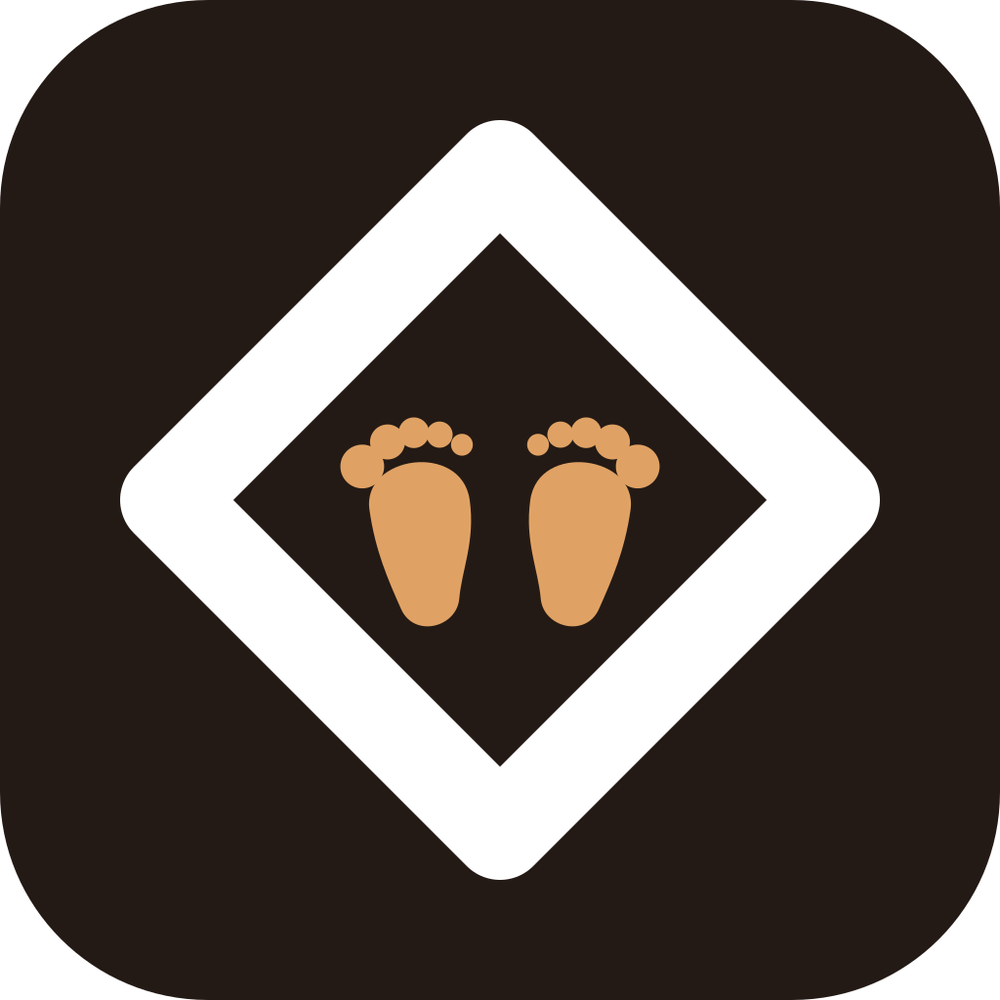
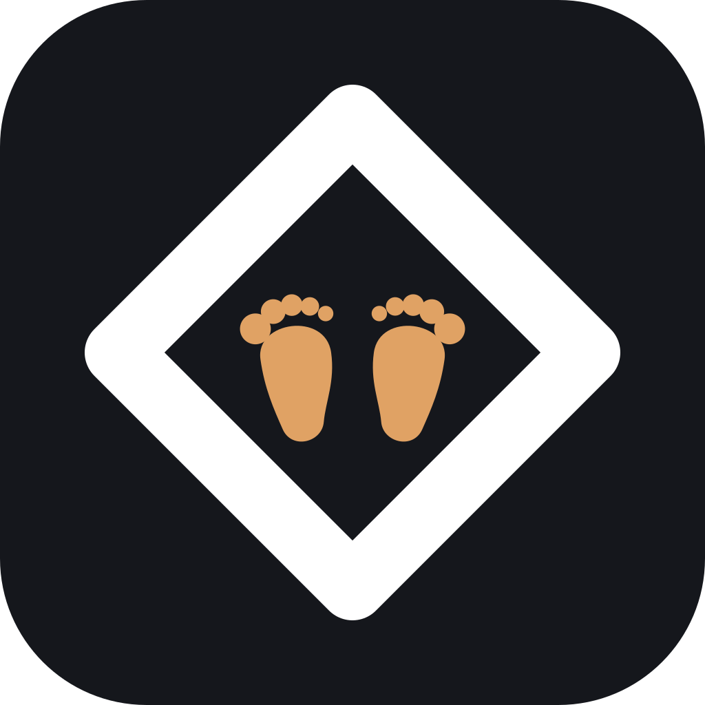
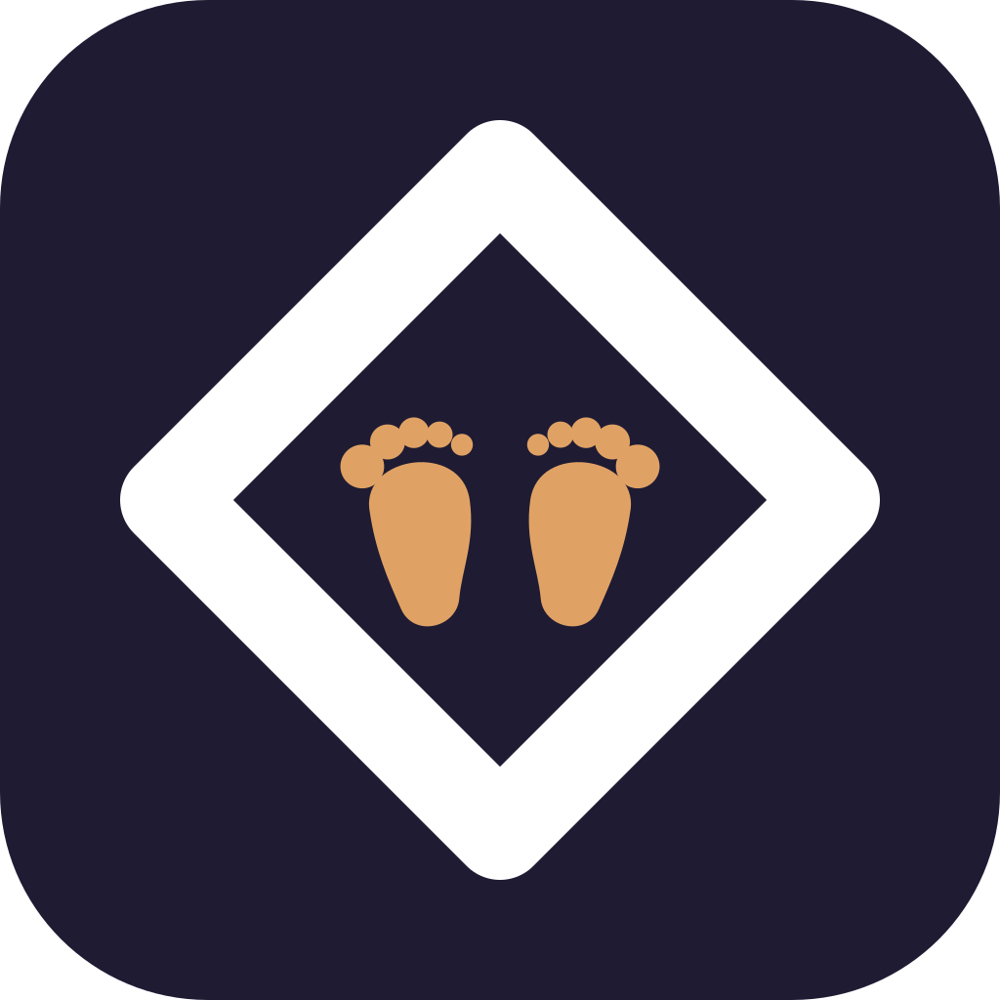
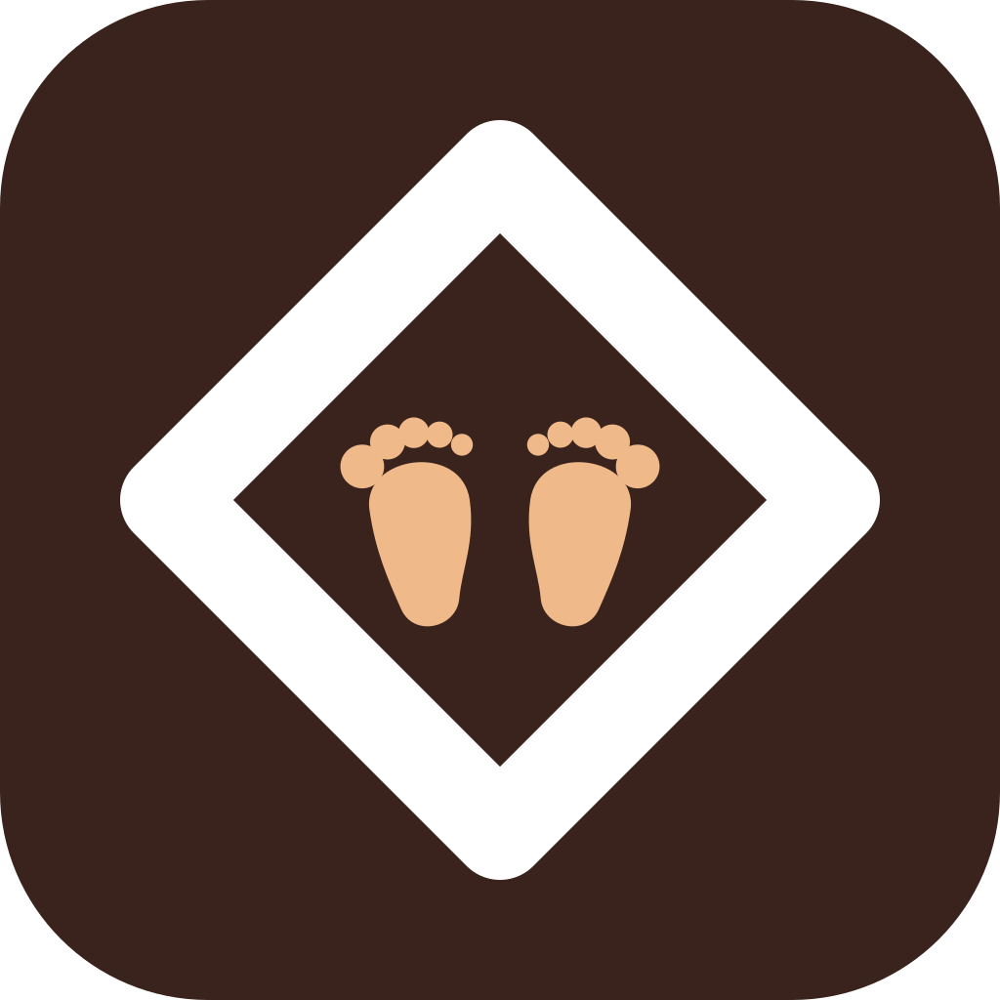
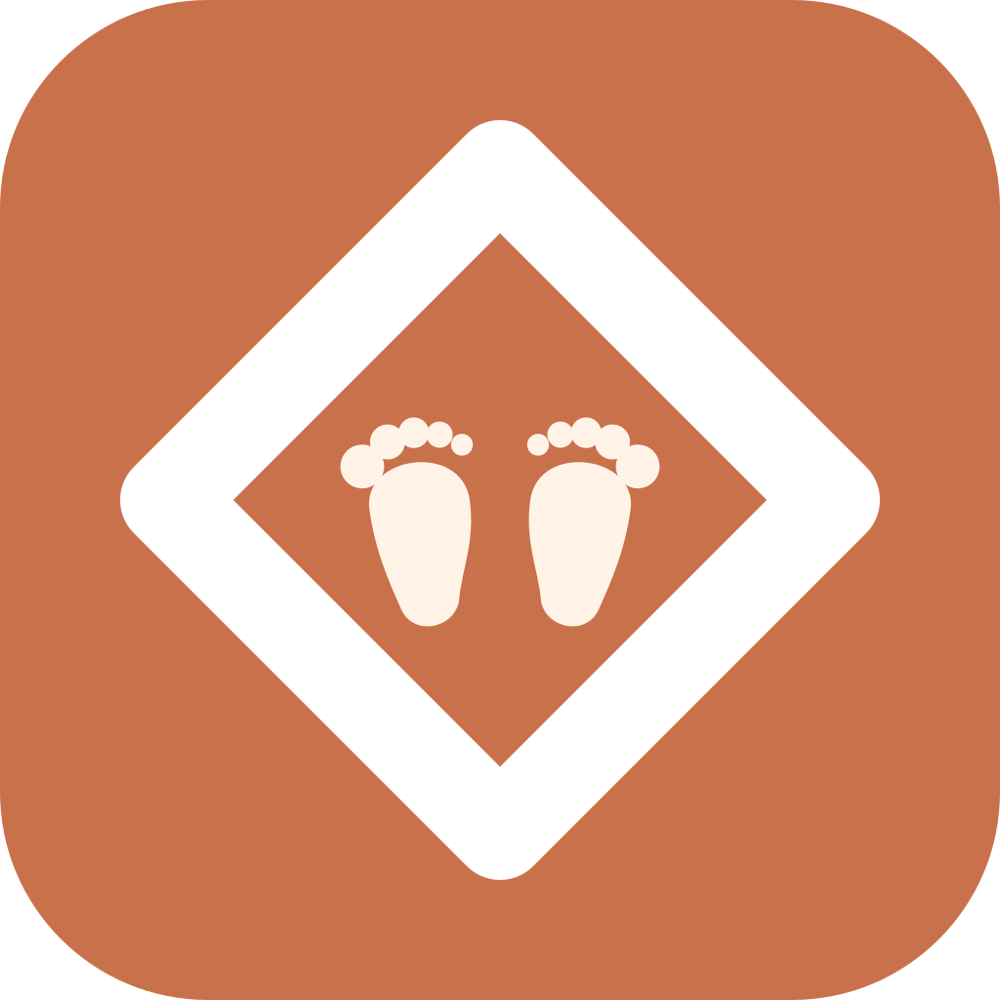
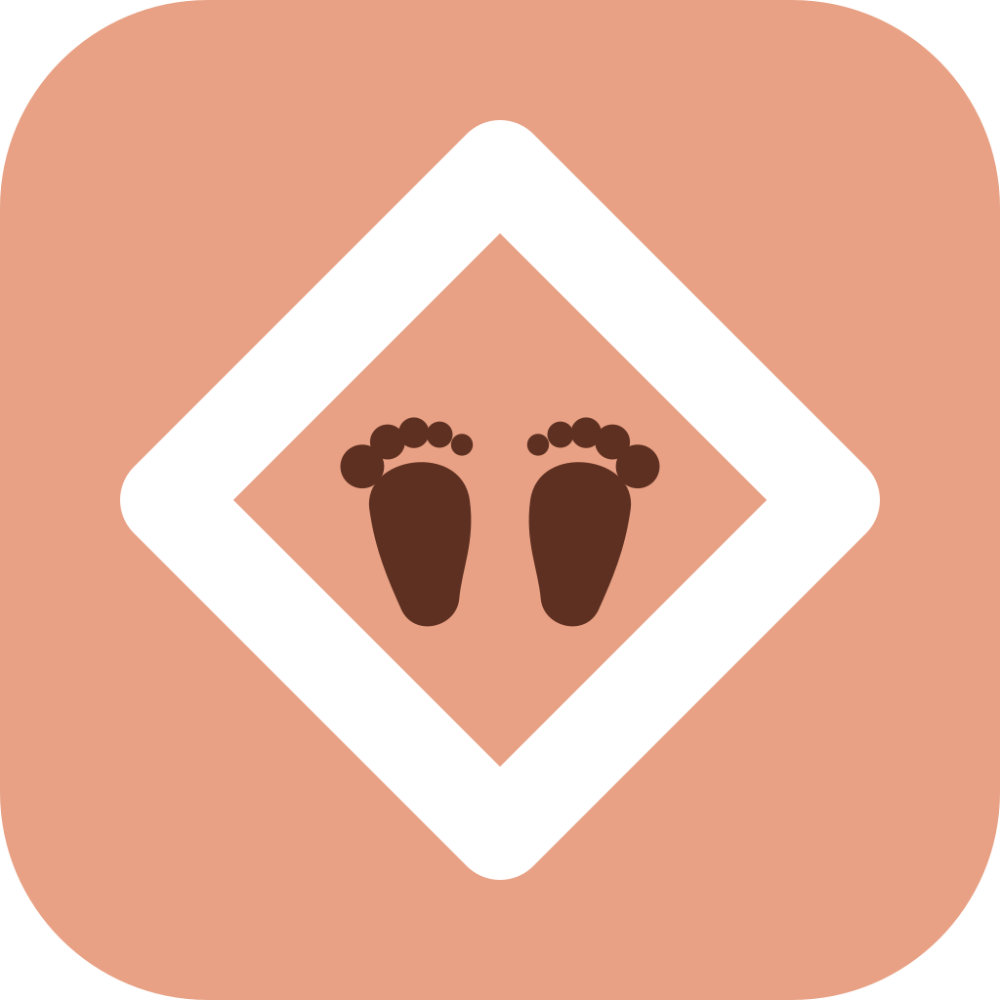

LittleGuide · J · Ножки — пять пальцев + варианты фона
Пальцев теперь пять на каждой ноге, стопа увеличена на 12 %. Ромб не тронут: белый, вершины 16,7/83,3 %, штрих 96. Меняется только плитка (и цвет ножек — под контраст). Внизу — те же шесть на тёмных и на светлых обоях, рядом с AsbestosGuard и Gymbar.

1 · Тёплый тёмный
#241A15 · ножки #E0A264
Нынешний. Тёмный, но коричневый — на экране рядом с Gymbar видно, что это другое приложение.

2 · Ночь приложения
#15171C · ножки #E0A264
Ровно тот цвет, что в тёмной теме LittleGuide. Минус: почти чёрный, спутается с Gymbar.

3 · Индиго
#1F1B33 · ножки #E0A264
Синий с сиреневым — ночь, но не тот синий, что у AsbestosGuard. Самый «спокойный» фон.

4 · Какао
#3A231C · ножки #F0B98A
Светлее и теплее первого: плитка не проваливается в чёрный на светлых обоях.

5 · Терракота
#C9714B · ножки #FFF3E8
Средний тон, из палитры приложения (accent-deep). Белый ромб на нём звенит, ножки кремовые.

6 · Абрикос
#E8A184 · ножки #5E3021
Дневной акцент целиком. Самая светлая плитка семьи, ножки тёмно-коричневые.